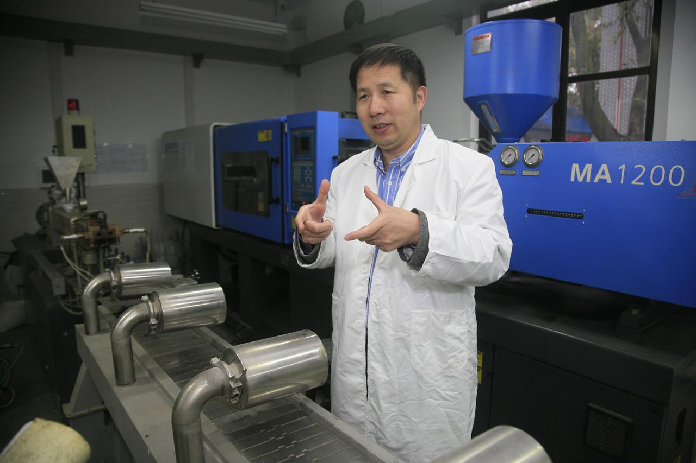

学院通知 · 科研创新
【人民日报】天府英才：甘愿坐“冷板凳”的院士王玉忠
发布时间：2022-08-22
编者按： 党的十八大以来，四川深入实施人才强省战略，我校深入实施人才强校战略，全方位培养、引进、用好人才。近日，四川日报推出“奋斗者·正青春——天府英才”系列报道，挖掘四川各类人才在各行业、领域不懈奋斗的故事，讲述各类人才“干一行、专一行、迷一行”的先进事迹。8月19日，四川日报川观新闻以《天府英才丨甘愿坐“冷板凳”的院士王玉忠》为题，采访报道了我校化学学院王玉忠院士的先进事迹，人民日报客户端等媒体进行了转载。全文如下： 天府英才丨甘愿坐“冷板凳”的院士王玉忠 人物名片 王玉忠，中国工程院院士、四川大学教授，高分子材料专家。创建了多个国家和省部级研究平台。发表的学术论文近10年SCI他引超过2万次，3项基础研究成果入编《国家自然科学基金资助项目优秀成果选编》，获授权发明专利170余件，囊获了国家三大科技成果奖，获评“四川省教书育人名师”。 主要事迹 这段时间，王玉忠正在为参加中国工程院的一个高端论坛做着准备。他将在大会上作题为“未来的高分子材料低碳发展途径”的报告。塑料、橡胶、纤维纺织品等有机高分子材料因自身固有的易燃性、难降解、不易回收等缺陷存在安全和生态环境问题，与此同时，对这些材料的刚性需求日益增长。为此，王玉忠潜心研究30多年，提出和发展了解决矛盾的新原理和新方法，引领了相关领域的发展方向，被国际同行评价为是该领域的“创新与学术思想的引领者”。这些当年的非学界热点领域现在受到了越来越多的关注。 解决高分子材料易燃性，需要在高分子材料中引入阻燃剂来实现，而过去常用的高效阻燃剂不仅存在生态环境问题，而且还会破坏高分子材料的其他性能。王玉忠提出了多种阻燃新原理并发展了相应的新技术，可以有效解决兼顾材料的阻燃性、环境友好性和其他综合性能的技术难题。特别是提出的高温自交联炭化阻燃原理与方法，无需引入卤素、磷等阻燃元素，开辟了“无传统阻燃元素”的绿色阻燃新方法，被国际同行专家评价为“具有开创性的意义”。 提到王玉忠院士，不得不提到“生物降解和回收循环利用”。众所周知，塑料袋、塑料瓶被埋在土壤中，几十年都不能降解，会造成严重的环境污染。 王玉忠院士提出和发展了可反复化学循环且可完全生物降解的高分子材料新技术，可实现材料在可回拣的条件下，实现完全的化学循环；在难以回收的条件下，这种高分子材料也可以在自然界中完全生物降解，这代表了未来一次性塑料制品的发展方向。针对废弃高分子材料导致的环境污染和资源浪费问题，他还提出了从废弃高分子材料到功能/高性能材料直接转化的“升级回收”新理念，不仅为热固性废弃高分子材料高值化利用开辟了全新思路，同时还为热塑性高分子的回收循环利用提供了重要借鉴。 王玉忠院士经常对他的学生说：“科研工作必须坚持‘两条腿走路’，既要瞄准科技前沿的重大科学问题，更要以国家重大需求为导向，以应用倒逼基础研究，从中提炼出基础科学问题，以基础研究支撑关键技术突破及应用。” 个人感言： 我所从事的研究方向不是热点方向，但我为之坚持了30多年。我始终认为，知识分子既要仰望星空、紧跟时代，也要有坐“冷板凳”的定力。的确，做热门研究容易在短期内出成果，但如果大家都去追热点，一些国际上长期未解决的科技难题和“卡脖子”的技术难题谁来解决？ 科技研究不仅要面向世界科技前沿，同样也应该面向经济主战场、国家重大需求、人民生命健康方面作贡献。希望我的一点经历能作星星之火，激起青年科研人员为“四个面向”坚持奋斗的熊熊斗志，最终成就我们国家的科技崛起。
